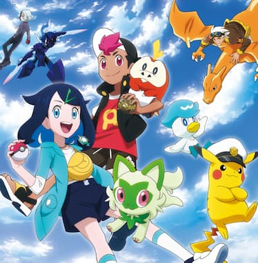
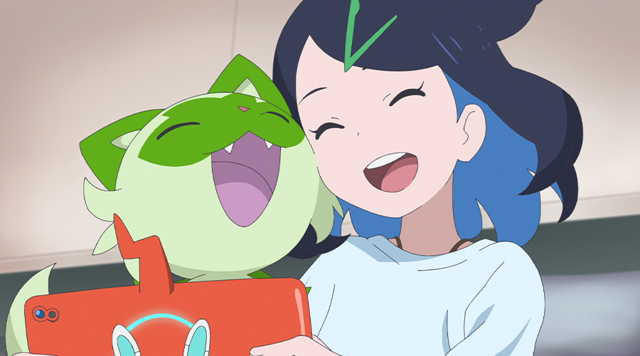

포켓몬 애니 보는 순서 총정리 — 무인편부터 리코와 로드까지
포켓몬 애니는 1997년부터 지금까지 세대가 다섯 번 넘게 바뀐 초장수 시리즈라, 처음 보려는 분들은 뭐부터 봐야 할지 막막하실 것 같아요. 무인편·AG·DP·베스트위시·XY·썬&문을 거쳐 지우가 은퇴한 뒤, 지금은 리코와 로드라는 완전히 새로운 주인공들의 이야기가 이어지고 있거든요. 저희가 나무위키와 포켓몬 공식 자료를 하나하나 대조해가며 방영 순서·정식 명칭·주인공 교체 시점을 정리했고, 굳이 다 안 보고 싶은 분들을 위한 현실적인 진입점까지 같이 짚어봤어요.

포켓몬스터: 리코와 로드의 모험 공식 키비주얼 — 지우 이후 새 시대를 여는 시리즈예요
이미지: 포켓몬 공식 사이트(horizons.pokemon.com)
지우 시대 계보지우 시대 7개 시즌, 세대별로 묶어 정리
1997년 일본에서 첫 방영된 이래로 2023년 3월까지 26년 동안 한지우(사토시)가 줄곧 주인공이었어요. 국내에는 1999년 7월 SBS를 통해 처음 들어왔고요. 배경 지방이 바뀔 때마다 시리즈 이름도 함께 바뀌는데, 정식 명칭과 순서를 표로 정리하면 이렇습니다.
| 시리즈 | 배경 지방 | 국내 방영 |
|---|---|---|
| 포켓몬스터(무인편) | 관동·오렌지제도·성도 | 1999.7~2002 (SBS) |
| 포켓몬스터 AG | 호연(+배틀 프런티어) | 2002~2006 |
| 포켓몬스터 DP | 신오 | 2006~2011 |
| 포켓몬스터 베스트위시(BW) | 하나·데코로라제도 | 2010~2014 |
| 포켓몬스터 XY | 칼로스 | 2013~2016 |
| 포켓몬스터 썬&문 | 알로라 | 2016~2019 |
| 포켓몬스터W(여행) | 전 지방+가라르 | 2019~2022 |
표만 보면 복잡해 보이지만, 사실 지우와 피카츄가 지방만 바꿔가며 계속 여행하는 하나의 큰 이야기예요. 무인편에서 오렌지제도·성도까지가 1부, AG부터 XY까지가 각 지방 리그에 도전하는 시기, 썬&문은 학교물로 톤이 확 바뀌고, 마지막 포켓몬스터W(흔히 '여행' 시리즈로도 불려요)에서 지우가 처음으로 전 세계를 무대로 한 월드 챔피언십에 도전해요. 참고로 국내 지우 성우는 시기에 따라 바뀌었는데, 무인편은 최덕희 성우님이, AG 이후로는 이선호 성우님이 맡아 오셨어요.
특히 마지막 포켓몬스터W(흔히 '여행'이라는 별칭으로도 불려요)는 지우와 신규 주인공 고우가 채박사 연구소의 조사 연구원이라는 명분으로 함께 전 지방을 돌아다니는 구성이었어요. 같은 여행을 해도 지우는 포켓몬 배틀로 강해지는 것, 고우는 환상의 포켓몬 뮤를 포함해 최대한 많은 포켓몬을 포획하는 것이 목표라 두 사람의 결이 대비되게 짜여 있었고요. 그렇게 지우가 알로라 리그 우승 이후 꿈꿔온 포켓몬 월드 챔피언십 마스터즈 토너먼트에서 우승하면서 정식 시리즈가 마무리됐어요. 이어서 방영된 스페셜 에피소드와 후속작 포켓몬스터W: 내 꿈은 포켓몬마스터(2023년 1~3월)가 지우와 피카츄만을 위한 진짜 마지막 여정이었고요. 최종화에서 지우는 챔피언 타이틀에 안주하지 않고 "세계의 모든 포켓몬과 친구가 되는 것"을 새로운 목표로 삼으며 여행을 이어가는 모습으로 시리즈를 마쳤어요. 1999년 7월 국내 첫 방영을 기준으로 하면 무려 24년 만의 완결이었습니다.
· 🌿 ·
새 시대 전환리코와 로드 — 지우 없는 완전히 새로운 포켓몬 애니
지우의 마지막 시리즈가 끝난 지 한 달도 안 된 2023년 4월 14일, 26년 만에 완전히 새로운 주인공들이 등장하는 시리즈가 시작됐어요. 한국 정식 명칭은 포켓몬스터: 리코와 로드의 모험인데, 이게 일본판 부제를 그대로 옮긴 표기예요. 해외에서는 'Pokémon Horizons: The Series(포켓몬 지평선)'이라는 이름으로 알려져서 이 제목으로 검색하시는 분도 많은데, 국내 정식 명칭은 '리코와 로드의 모험' 쪽이라는 것만 기억해두시면 헷갈리지 않으실 거예요.

주인공 리코와 파트너 포켓몬이 함께하는 본편 장면이에요
이미지: 포켓몬 공식 사이트(pokemonkorea.co.kr)
팔데아 출신 소녀 리코와 관동 출신 소년 로드가 주인공인데, 리코는 신비한 펜던트를, 로드는 정체를 알 수 없는 몬스터볼을 갖고 있어서 그 수수께끼를 풀어가며 여행하는 게 이번 시리즈의 큰 줄기예요. 그동안 늘 관동에서 시작하던 것과 달리 이번엔 처음부터 여러 지방을 넘나드는 게 색다르더라고요.
스토리 연결 면에서는 지우 시대와 세계관을 공유하되 이야기는 완전히 독립돼 있어요. 즉 무인편부터 안 보고 리코와 로드부터 시작해도 스토리를 이해하는 데는 전혀 문제가 없다는 뜻이에요. 국내에서는 투니버스에서 방영 중이고, 넷플릭스에서도 1장(1~25화)이 2023년 11월 3일부터 스트리밍되고 있어요. 이후 파트는 넷플릭스 공개 여부와 시점이 계속 갱신되는 사안이라, 최신 화수는 넷플릭스·투니버스 편성표에서 직접 확인하시는 게 정확해요. 참고로 직전 시리즈인 포켓몬스터W도 넷플릭스에 별도 페이지로 올라와 있어서, 지우의 마지막 여정과 새 시대 리코·로드를 넷플릭스 한 곳에서 이어 볼 수 있는 조합이 이미 갖춰져 있는 셈이에요.
· 🌿 ·
극장판 보는 법극장판은 어떻게 끼워 보면 좋을까
포켓몬 극장판은 시기에 따라 TV 시리즈와의 관계가 달라요. 무인편부터 베스트위시 이전까지는 극장판이 그 시기 TV판 등장인물·분위기를 그대로 이어받는 경우가 많아서, 해당 시즌을 보는 중간중간에 순서대로 끼워 보면 몰입이 더 잘 돼요. 실제로 초기 극장판은 1998년 뮤츠의 역습 → 1999년 루기아의 탄생 → 2000년 결정탑의 제왕 앤테이 순서로 매년 여름 개봉하면서 무인편과 나란히 이어졌고, 원래는 이 3부작으로 이야기를 마무리 지으려던 기획이었는데 TV판이 장기 시리즈로 방향을 틀면서 극장판도 이후 시즌마다 계속 나오는 형태로 이어졌다고 해요. 반면 베스트위시 이후부터는 극장판이 TV 시리즈와 노선을 분리해서, 극장판마다 독립된 이야기로 봐도 무리가 없어요. 결론적으로 극장판은 "꼭 봐야 진도가 나가는" 필수 코스가 아니라 "구미가 당기면 그때그때 골라 보는" 사이드 코스로 생각하시면 부담이 훨씬 줄어들어요.
극장판까지 다 챙기려고 하면 시작하기도 전에 지칠 수 있어요. 저희는 TV 시리즈를 먼저 쭉 따라가다가, 좋아하는 세대의 극장판만 나중에 골라보는 방식을 추천해요.
· 🌿 ·
현실적인 진입점꼭 순서대로 다 봐야 할까 — 상황별 추천
여기까지 정리하고 보니 전체 시즌 수가 8개, 에피소드로는 1,200화가 훌쩍 넘는 분량이에요. 현실적으로 이걸 처음부터 다 보고 시작하는 건 웬만한 팬이 아니고서는 쉽지 않아요. 그래서 상황별로 어디서부터 보면 좋을지 나눠봤어요.
추천시간 없이 지금 바로 새 애니만 보고 싶다면
리코와 로드의 모험부터 바로 시작하세요. 앞서 말씀드렸듯 지우 시대 이야기와 독립돼 있어서 배경지식 없이도 완전히 이해가 돼요. 지금 방영 중인 최신 시리즈라 화제성도 가장 높고요.
추천어릴 때 보던 추억을 되짚고 싶다면
무인편(관동편)부터 보세요. 처음 방식 그대로 지우가 파이리·꼬부기·이상해씨를 만나가는 과정이라 향수를 자극하기 딱 좋아요. 이후 시즌은 원하는 세대에서 멈춰도 괜찮아요.
추천본가 게임(스칼렛·바이올렛)부터 입문했다면
리코와 로드의 배경이 팔데아 지방을 포함한 세계관이라 게임에서 본 지역·포켓몬이 애니에도 자연스럽게 등장해요. 게임과 애니를 같이 즐기고 싶다면 이 시리즈가 가장 잘 맞아요.
추천지우의 완결까지 챙겨보고 싶은 팬이라면
순서대로 다 보되, 정 시간이 부족하면 각 세대의 리그 결승·마지막 화 위주로 건너뛰며 보는 것도 방법이에요. 최소한 마지막 W와 W: 내 꿈은 포켓몬마스터는 지우 서사의 결말이라 놓치지 않는 걸 추천해요.
추천극장판까지 챙기고 싶은 영화파라면
TV 시리즈를 다 좇기보다 극장판만 개봉 순서대로 보는 것도 하나의 방법이에요. 1998년 뮤츠의 역습부터 시작해 매년 여름 나온 극장판만 따라가면, 지우 시대 전체 분위기를 훨씬 짧은 시간에 훑어볼 수 있어요.
가장 많이 헷갈려하시는 부분만 짚으면, 포켓몬 지평선과 리코와 로드의 모험은 같은 작품이에요(해외판/국내판 제목 차이). 그리고 리코와 로드부터 봐도 지우 이야기를 몰라서 이해가 안 되는 일은 없어요 — 세계관은 이어지지만 이야기 자체는 독립적으로 짜여 있거든요.
정리하자면, 지우 시대(무인편~W)는 시간순으로 이어지는 하나의 큰 이야기고 리코와 로드의 모험은 그 뒤를 잇는 완전히 새로운 시대라 어디서 시작해도 괜찮아요. 저희는 옛날 감성이 그리울 땐 무인편을, 요즘 애니 느낌을 즐기고 싶을 땐 리코와 로드를 번갈아 보고 있어요. 다 못 봐도 괜찮으니 부담 갖지 말고 끌리는 지점부터 편하게 시작해보세요.